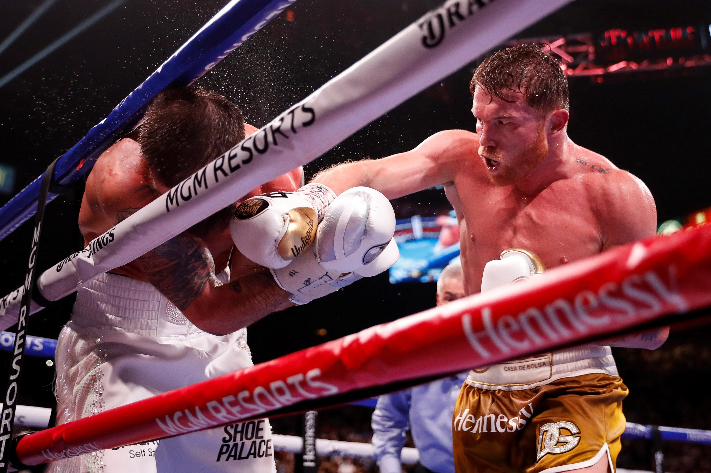

Boxeo

9/11/21
El boxeo (del inglés boxing), también llamado a veces2 boxeo inglés, boxeo irlandés o pugilismo, y comúnmente conocido como box, es un deporte de contacto en el que dos contrincantes luchan utilizando únicamente sus puños con guantes, golpeando a su adversario de la cintura hacia arriba, dentro de un cuadrilátero especialmente diseñado para tal fin; la pelea se lleva a cabo en breves secuencias de lucha denominadas asaltos y de acuerdo a un preciso reglamento, el cual regula categorías de pesos y duración del encuentro, entre otros aspectos. De un modo más general, boxeo o "boxing" se refiere a un amplio género de deportes de combate en las que dos oponentes se enfrentan en lucha utilizando los puños, tapados por guantes y diferenciándose según sus reglas diferentes deportes como el ya mencionado boxeo inglés o boxeo propiamente dicho, el boxeo francés o savate, el boxeo chino o boxeo Shaolín, el kick boxing o boxeo japonés, el muay thai o boxeo tailandés, el suntukan o boxeo filipino, y los antiguos estilos de pugilato griegos como el pygmachia y el pancracio.3wikipedia

Canelo
Canelo
El boxeo es de los deportes más exigentes que existen, y en este deporte ha surgido un peleador que ha maravillado a todos con su gran destreza: Saúl “Canelo” Álvarez. Es un peleador mexicano que hoy por hoy es el mejor libra por libra del mundo, hazaña de suma importancia en la historia de este deporte. El Canelo ha derrotado a múltiples campeones mundiales, como lo fueron Caleb Plant, Billy Joe Saunders, Callum Smith, Gennady “GGG” Golovkin, entre otros. Canelo ha unificado todos los cinturones en la categoría de los supermedianos, y parece que no hay nadie capaz de detener su paso demoledor por este deporte. Canelo comenzó en el boxeo profesional a los 15 años, y tiene un récord de 60 peleas: 57 victorias, 2 empates y únicamente una derrota. Con su estilo impredecible, combinaciones variadas y sumamente peligrosas, un gran poder en sus puños, y un impecable movimiento de cintura y cabeza, Canelo es el mejor peleador hoy en día, el mejor libra por libra del deporte.
El Canelo es el mejor boxeador del mundo en estos momentos, y es un boxeador que pasará a la historia como uno de los más grandes de la historia.
En el video podemos apreciar la habilidad de este boxeador y algunos de los mejores momentos de su carrera.
-----------------------------------------------------------------------------------------------------------------------

Gypsy King
Tyson Fury
Tyson Fury es un boxeador de pesos pesados, campeón del mundo.
Tyson Fury es uno de los mejores boxeadores que haya habido en la categoría de pesos pesados, ya que tiene gran potencia, velocidad y habilidad en este deporte.
En este video se muestran algunos de los mejores momentos de su pelea contra Deontay Wilder (la 3ra).
-----------------------------------------------------------------------------------------------------------------------

Muhammad Ali
Muhammad Ali
Muhammad Ali es el mas grande boxeadr de la historia.
En el boxeo existen leyendas y luego está Muhammad Ali. El más grande de la historia, no hay nada más que agregar.
El video trata sobre los mejores momentos de esta leyenda del boxeo.